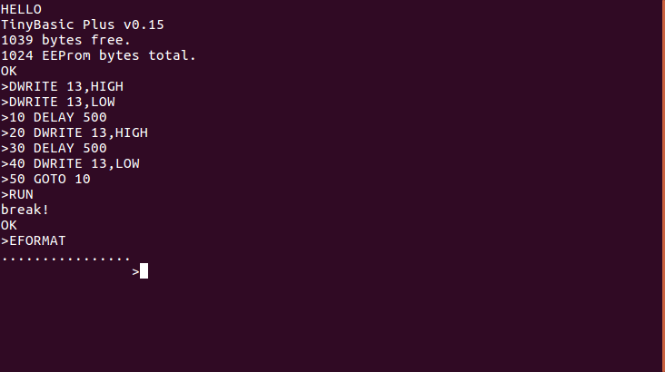
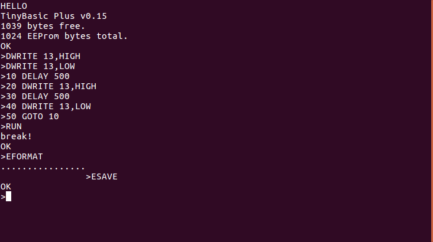

risorse | tiny basic su arduino
Al lavoro alcuni colleghi stanno effettuando il porting di MicroPython su un sistema proprietario; fantasticavo di installarlo sulla mia scheda Arduino UNO, ma la cosa non è fattibile a causa della scarsità di risorse disponibili (cfr. “Micropython on Any Arduino Board?” nel forum ufficiale).
Cercando in rete ispirazione per un linguaggio shell alternativo mi sono imbattuto in Tiny BASIC. Pensavo di implementare un piccolo interprete per questo linguaggio, ma qualcuno mi ha preceduto: TinyBasic Plus è una versione di Tiny BASIC adattabile a diverse piattaforme Arduino, UNO compreso.
Scaricato lo sketch dal sito ufficiale (qui una copia locale della versione 0.15) e caricato su Arduino, si accede all'interprete BASIC attraverso un terminale, per esempio screen:
$ screen /dev/ttyACM0 9600
Il messaggio di benvenuto di TinyBasic Plus
Oltre alle istruzioni incluse nel dialetto Tiny del BASIC, TinyBasic Plus ne supporta di specifiche per Arduino:
Per esempio, il programma seguente fa lampeggiare il LED sulla scheda:
10 DELAY 500 20 DWRITE 13,HIGH 30 DELAY 500 40 DWRITE 13,LOW 50 GOTO 10
Il programma del lampeggio caricato nella memoria dell'interprete
Per eseguire il programma si usa il comando:
>RUN
Il LED comincia a lampeggiare. Usare la combinazione di tasti Ctrl+C per interrompere l'esecuzione del programma:

L'interprete segnala l'avvenuta interruzione del programma
TinyBasic Plus offre una forma di persistenza dei programmi: è infatti possibile salvare una copia del programma attualmente caricato in memoria in una zona dedicata dell'EEPROM di Arduino. Bisogna prima di tutto formattare l'area di salvataggio:
>EFORMAT
Dopo alcuni istanti l'interprete ripresenta il prompt:
La procedura di formattazione dell'area di salvataggio richiede alcuni secondi
Per salvare il programma si usa il comando ESAVE:
Il salvataggio del programma è pressoché istantaneo
Il programma può essere richiamato con il comando ELOAD, per esempio dopo un NEW:
>NEW >LIST OK >ELOAD >LIST 10 DELAY 500 20 DWRITE 13,HIGH 30 DELAY 500 40 DWRITE 13,LOW 50 GOTO 10 OK >
In aggiunta, se l'interprete è stato compilato con il flag ENABLE_EAUTORUN (attivo di default), alla successiva accensione TinyBasic Plus recupera il programma salvato e lo esegue immediatamente. In questo caso, per interromperne l'escuzione, occorre ricollegarsi all'interprete con il terminale e inviare un Ctrl+C.
Pagina modificata il 14/10/2018